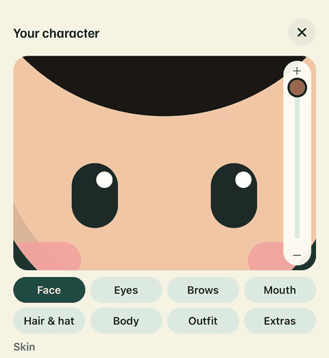
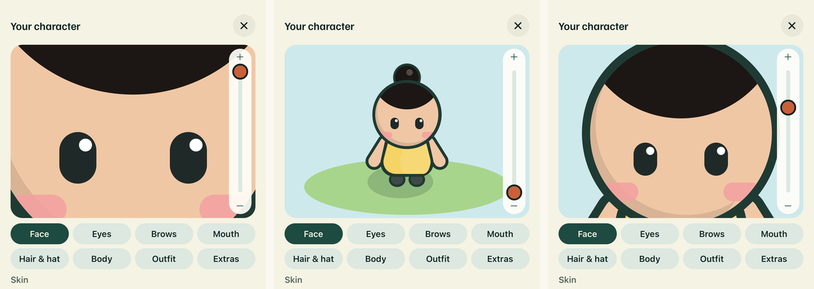
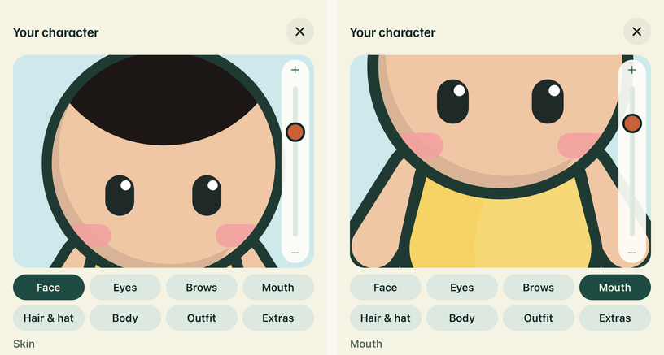
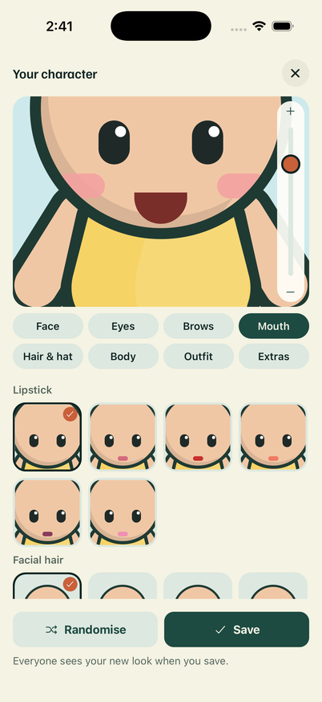
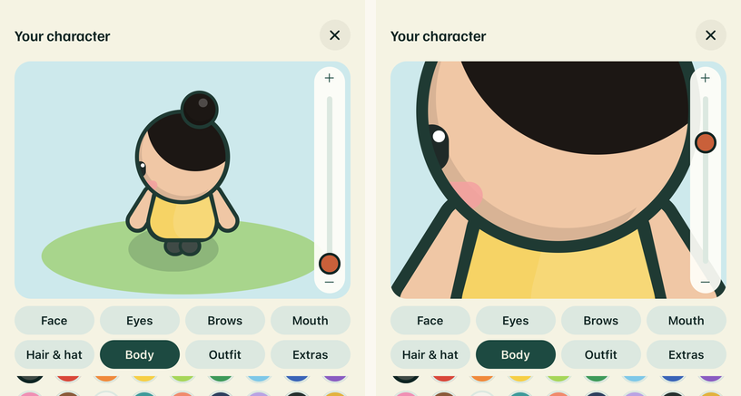
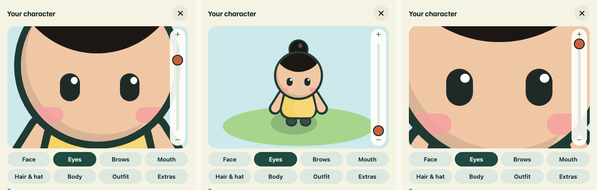
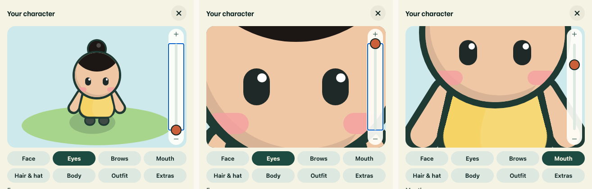
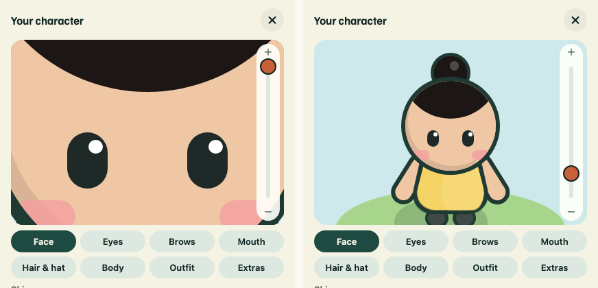

Two fingers on the preview zoom in and out. A pinch never turns the character.
A slider on the preview's right edge does the same: + at the top, - at the bottom. Its thumb follows a pinch.
All the way out shows the whole character (the Body tab's shot). All the way in is closer than the Eyes tab's close-up.
Zooming in keeps the tab's part in place (the eyes and nose on Face, the part on Eyes, Brows and Mouth).
Changing tabs still glides to that tab's own shot, and the slider moves to match.
Web: the slider takes the mouse, arrow keys, Page Up/Down, Home and End; ctrl-scroll or a trackpad pinch on the preview zooms.
iOS Simulator (iPhone 17, dev client)

Pinch out and in, slider drag, tab change, a pick, a one-finger turn, then a pinch on Body

Face tab: pinched in (slider at the top), pinched out (whole character, slider at the bottom), slider dragged with one finger

Changing to Mouth drops the manual zoom and goes to the Mouth shot

The list below still scrolls and its taps still pick

One finger still turns it; a pinch after that zooms without turning it further
Web (Chromium, 430 x 900)
Mouse drag past both ends, keyboard, tab changes, ctrl-scroll

Eyes tab: its own shot, dragged out to the whole character, dragged in to the closest

Home and End, then Mouth back at its own zoom

A two-finger touch pinch on a touch-screen browser, through the same code as iOS
Verification
Unit tests for the zoom math: limits and clamping, pinch spread to zoom, slider position to zoom, keys, ctrl-scroll, the tab's own shot at its own zoom, focus kept when zooming in, tab change reset.
Web (local isolated backend, sweep accounts only): role slider, label Zoom, value 0 to 100; mouse drag clamps at 0 and 100 with no text selected and nothing scrolled; keys step 5, page 20; tab changes reset; ctrl-scroll zooms and a plain scroll doesn't; one-finger drag still turns; picks still work; touch pinch zooms; no page errors.
Web checks: character-camera (with new zoom steps), outfits, chapel-pews, arcade-podium, rps-ask, backyard-chat all pass.
iOS: pinch out and in, slider drag, slider follows pinch, tab reset, list scroll and taps, one-finger turn, nothing clipped at the right edge or under the safe area.
Not checked: VoiceOver reading the slider, Android, Safari's own trackpad pinch (it sends gesture events, not ctrl-scroll).